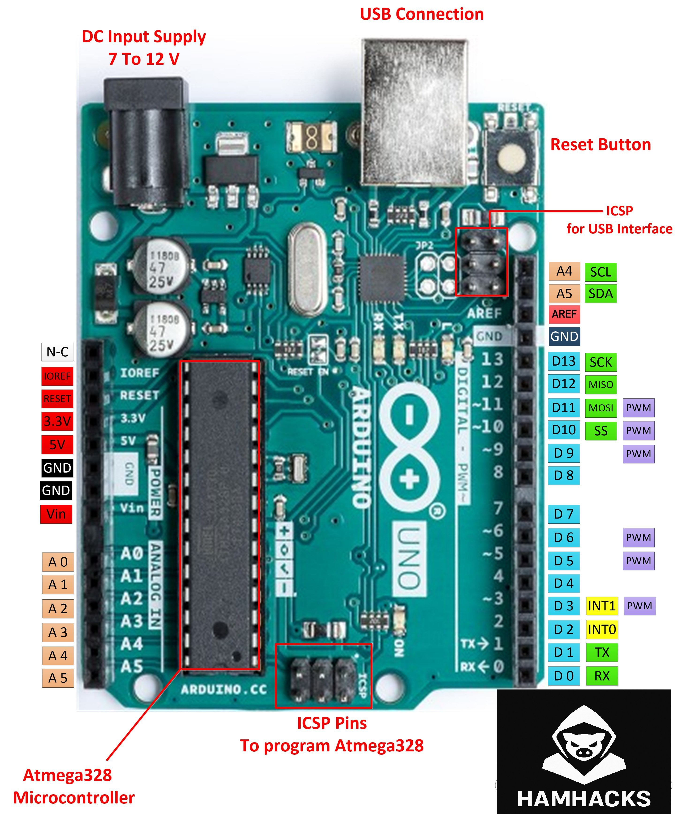

Arduino Blink Sketch
So, if you have made it here I guess you are ready to start making? Here's your first project with Arduino — the "Blink" sketch. This simple program will make the built-in LED on your Arduino blink on and off. Let’s walk through it.
What You’ll Need:
- Arduino Board (Any model like Arduino Uno or Nano should work fine)
- USB Cable to connect your Arduino to your computer
- Arduino IDE (the software where you’ll write and upload your code)
- LED on your Arduino Board (In most cases, it’s already built into the board!)
Step 1: Install the Arduino IDE
Before we can start coding, you’ll need to install the Arduino Integrated Development Environment (IDE) on your computer. This is where you’ll write and upload your code (called “sketches”) to the Arduino.
- Go to the Arduino website and download the IDE.
- Follow the installation instructions for your operating system (Windows, macOS, or Linux).
Once the IDE is installed, open it up. You’ll be writing your code here.
Step 2: Connect Your Arduino to the Computer
- Use the USB cable to connect your Arduino board to your computer.
- You should see a little light on the board blink, showing it’s powered on. But don’t worry — it’s not blinking in the “Blink” sketch yet! We’re getting there.
Step 3: Open the "Blink" Sketch
Now let’s load the classic Blink sketch, which will make the on-board LED blink on and off. Here's how you can do that:
- In the Arduino IDE, click on File > Examples > 01.Basics > Blink.
- The code for the Blink sketch will appear in the editor.
Here’s the code for the "Blink" sketch:
// the setup function runs once when you press reset or power the board
void setup() {
// initialize the digital pin as an output.
pinMode(LED_BUILTIN, OUTPUT);
}
// the loop function runs over and over again forever
void loop() {
digitalWrite(LED_BUILTIN, HIGH); // turn the LED on (HIGH is the voltage level)
delay(1000); // wait for a second
digitalWrite(LED_BUILTIN, LOW); // turn the LED off by making the voltage LOW
delay(1000); // wait for a second
}
Step 4: Upload the Code to Your Arduino
Once the Blink sketch is open, you’re ready to upload it to your board.
- Click the "Upload" button (it’s the arrow icon on the top-left of the IDE).
- The Arduino IDE will compile the code and then upload it to your board. You’ll see some blinking lights on your Arduino during this process — this is normal!
After a few moments, the on-board LED on your Arduino should start blinking! That’s it! You’ve just written and uploaded your very first Arduino program.
Step 5: Experiment!
Now that you’ve got the basics down, feel free to play around with the delay times in the code. Try changing the delay(1000) to something like delay(500) for a faster blink, or delay(2000) for a slower blink.
Understanding the Circuit (Bonus!)
If you want to get a bit deeper into the hardware side of things, here's a quick look at your Arduino pinout to help you understand where things are happening. Below is the image of the Arduino Pinout, which shows the various pins you can use to connect sensors, LEDs, and other components.

In the Blink sketch, we’re using the built-in LED on the Arduino board, which is typically connected to pin 13. If you want to control an external LED, you would connect it to a digital pin (like pin 13) and ground.